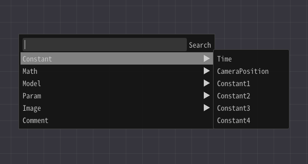

Material-Reference¶
Overview¶
Effekseer allows you to create materials for use with the Material Editor. You can use materials to specify how particles are drawn.
The Material Editor starts from Material in the Effekseer Basic Render Settings Panel.
In the Material Editor, you can use nodes to write calculations. The result of the calculation is drawn as particles.


You can connect the input and output of the node with the left mouse drag.
You can create a new node from the right-click menu.
The simplest design has two nodes: Constant3 and Output.
For Constant3, you can specify three values. On Output, you receive the final output value.
You connect the output Emissive input pin and the Constant3 output pin.
Then, the value of Constant3 is displayed on the particle.

Detailed operation method¶
Move node¶
After selecting with left click, you can move with left drag.
Search node¶
If you enter a keyword in the menu with right-click, only the nodes that contain that keyword are displayed. Keyword is shown by mouse over.

Delete line or node¶
Left-click to select and right-click to display Delete in the menu. Select Delete to delete nodes and lines.

Description of parameters¶
A summary and description can be written in the parameter node. This summary and description are displayed in Effekseer. I recommend that you write a clear description.
Shortcut¶
Ctrl(Command) + Z |
Undo |
Ctrl(Command) + Y |
Redo |
Ctrl(Command) + C |
Copy |
Ctrl(Command) + V |
Paste |
Ctrl(Command) + S |
Save |
About lighting¶
You can select whether are particles lighttten with the property of Outout node in a material.

{kind=link}
{kind=link}
Value types of input and output¶
There are two value types: Number and Image. Number in the material consists of 1 to 4 numerical values. In many cases, Number can be connected with different number of elements. Image can only be connected to image.
In this document, I call Number 1 to Number 4 depending on the number of elements.
Node¶
There are various nodes in the material editor.
Output¶
You can specify the final output value.
In the output, you can spefiy the type of lighting.
There are Lit and Unlit lighting. If you specify Lit, it will be affected by the light source. If you specify Unlit, the entered value is displayed.
BaseColor (Number3)¶
Valid only for Lit. Input the color of the material.
Emissive (Number3)¶
Input the emission color of the material. For Unlit, input the color to display.
Opacity (Number1)¶
Input the transparency.
OpacityMask (Number1)¶
Input the mask. If it is less than 0, it is not displayed at all.
Roughness (Number1)¶
Valid only for Lit. Input the surface roughness.
Normal (Number3)¶
Valid only for Lit. Input the direction of the normal.
AmbientOcclusion¶
Valid only for Lit. Input the value to darken the lighting. Specify 0 to make it black.
WorldPositionOffset (Number3)¶
Input the moving distance of the vertex. The vertex position moves by the input value.
Refraction (Number1)¶
Input the refractive index. If the refractive index is 1, it is not be refracted. If the refractive index is not 1, it show the refracted background. Input larger value than 1.
Comment (Comment)¶
Comments for clarity. Does not affect operation.
Details of calculation behavior¶
If V1 and V2 have inputs, you can enter the same type of value or the Number 1 for V1 or V2. If V1 and V2 are of the same type, the result with the type is output.
If V1 is the numerical value 1, it outputs each element of V2 and the result of calculating V1. If V2 is the numerical value 1, it outputs each element of V1 and the result of calculating V2.